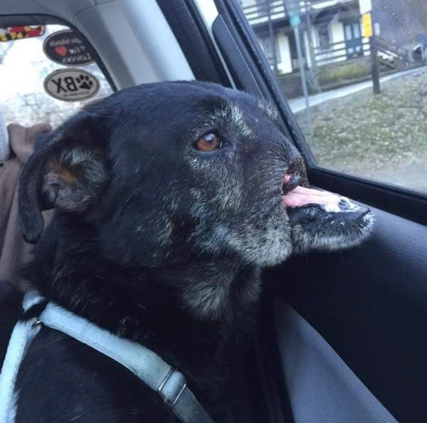
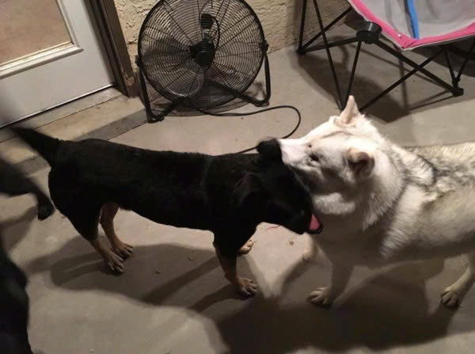
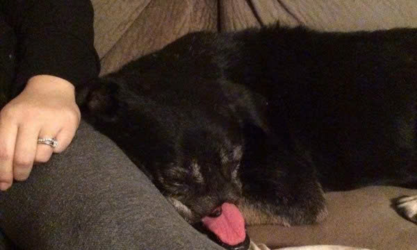

Hạnh phúc mỉm cười với chú chó bị cắt mất nửa mặt
Chú chó Anubis bị cắt mõm tại Cairo
Chỉ vì muốn làm tròn nhiệm vụ của mình là canh giữ tài sản cho chủ nhân, một chú chó ở Cairo, Ai Cập đã bị những kẻ tàn ác nhẫn tâm cắt mõm, biến thành một con chó xấu xí tàn tật.
Giống như mọi con chó được giao nhiệm vụ, khi có người lạ tiến đến gần khu vực tài sản, dĩ nhiên chú chó sẽ sủa lên, đuổi những kẻ đó đi. Và chỉ vì vậy, những kẻ bị chú chó Anubis đuổi đi đã cắt mất chiếc mũi của nó, cắt luôn cả một phần mõm trên của nó. Anubis cũng không còn được trọng dụng và nhanh chóng bị bỏ rơi.
Và trong nhiều năm trời, người ta nhìn thấy một chú chó có khuôn mặt kinh dị, mất đi hàm trên rong ruổi khắp Cairo, nằm vật vã ở bất cứ nơi đâu nó có thể ngả lưng. Cũng trong từng ấy năm, Anubis mất đi tiếng sủa, im lặng hoàn toàn, chẳng ai còn nghe thấy tiếng sủa của chú chó đen ngày xưa nữa.
Có thể Anubis đã mất đi tiếng nói của chính mình, nhưng các tổ chức phúc lợi động vật sẽ giành lại tiếng nói cho chú chó dũng cảm. Đầu tiên phải là Tổ chức bảo vệ động vật địa phương Animal Protection Foundation, một tổ chức tại Cairo chuyên giúp đỡ các con vật bị bỏ rơi trong thành phố. Sau đó là SNARR, tổ chức giành quyền lợi và giúp động vật tái hoà nhập cuộc sống cũng tham gia đòi lại công bằng cho Anubis.

Chú chó may mắn được rất nhiều người tốt bụng giúp đỡ, chăm sóc.
Ở mỗi chặng dừng chân, Anubis lại được những con người thay phiên che chở, chăm sóc. Đây có lẽ chính là cuộc hành trình đi tìm lại tình yêu đã mất của chú chó dũng cảm bị số phận ngược đãi. Ở chặng dừng chân cuối cùng tại El Paso, Texas, Anubis đã chính thức tìm được gia đình mới cho mình.
Thực tế, gia đình ở El Paso sẽ được nuôi Anubis trong vòng 6 tháng. Tuy nhiên với những gì mà họ thể hiện và cả tình cảm mà Anubis dành cho họ, có lẽ khả năng rất cao là cậu bé của chúng ta sẽ được ở lại với bố mẹ mới. Không chỉ bố mẹ mới, Anubis còn được làm quen với một bà chị khác, cũng là một con chó mù được gia đình đem về cưu mang.
Qua nhiều năm vật vờ khắp các hang cùng ngõ hẻm trên đường phố, khổ sở với chiếc mõm không lành lặn, cuối cùng thì số phận đã mỉm cười với Anubis. Chẳng còn là con chó xấu xí của địa ngục, giờ chỉ là một cậu bé đáng yêu thích lăn lộn trên ghế sô pha mà thôi.

Sau nhiều năm mưu sinh một mình trên đường phố, cuối cùng Anubis cũng được cứu giúp.

Tưởng như số phận đã quay lưng với Anubis, thế nhưng bất ngờ hạnh phúc lại mỉm cười với chú bé.